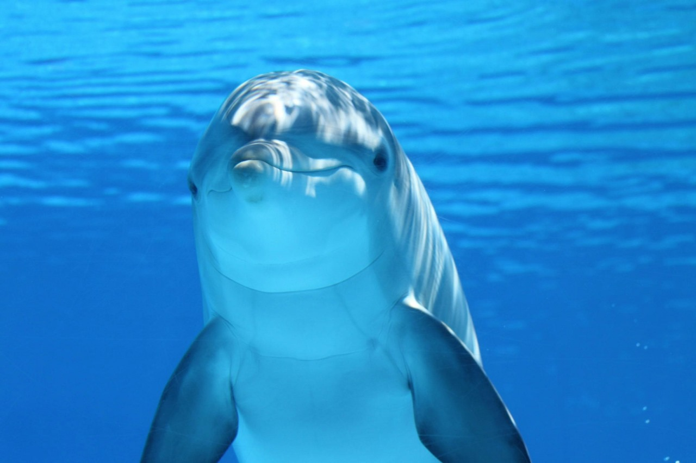
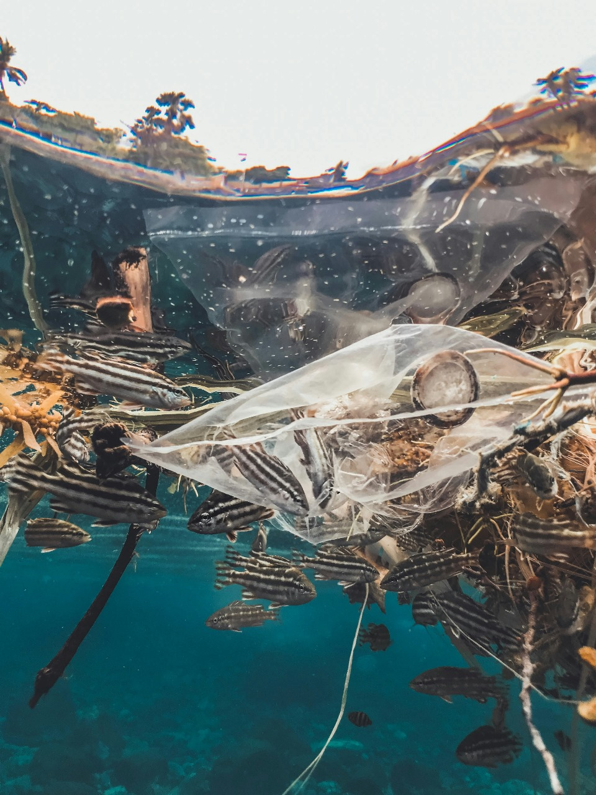

Life below water encompasses the vast marine ecosystems that cover more than 70% of our planet's surface. United Nations Sustainable Development Goal 14 aims to conserve and sustainably use the oceans, seas, and marine resources for sustainable development.
Oceans and seas are essential for life on Earth. They regulate the climate, produce oxygen, and provide food and livelihoods for millions of people. However, human activities such as overfishing, pollution, and climate change are threatening these vital ecosystems.
Governments, NGOs, and communities worldwide are taking various actions to address the challenges facing our oceans:
Achieving Goal 14 requires international cooperation and concerted efforts to protect marine biodiversity, reduce pollution, regulate fishing practices, and promote sustainable ocean-based economies. Individuals, governments, businesses, and organizations all have a role to play in safeguarding life below water for present and future generations.